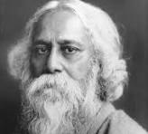
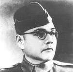

| Images | Description |
|---|---|
|  Rabindranath Tagore |
Rabindranath Tagore (7 May 1861-7 August 1941), also known by his pseudonym Bhanusimha (Sun Lion) was a Bengali polymath (poet, writer, playwright, composer, philosopher, social reformer, and painter) of the Bengal Renaissance period.In 1913, Tagore became the fourth non-European to win a Nobel Prize in any category and also the first lyricist and non-European to win the Nobel Prize in Literature.[8] He has written the national anthems of India and Bangladesh. |
|  Subhas Chandra Bose |
Subhas Chandra Bose(23 January 1897-18 August 1945) was an Indian anti-colonial nationalist whose defiance of British authority in India made him a hero among many Indians,but his wartime alliances with Nazi Germany and Fascist Japan left a legacy vexed by authoritarianism,anti-Semitism and military failure.The honorific 'Netaji' (Hindustani: "Respected Leader") was first applied to Bose in Germany in early 1942—by the Indian soldiers of the Indische Legion and by the German and Indian officials in the Special Bureau for India in Berlin. |